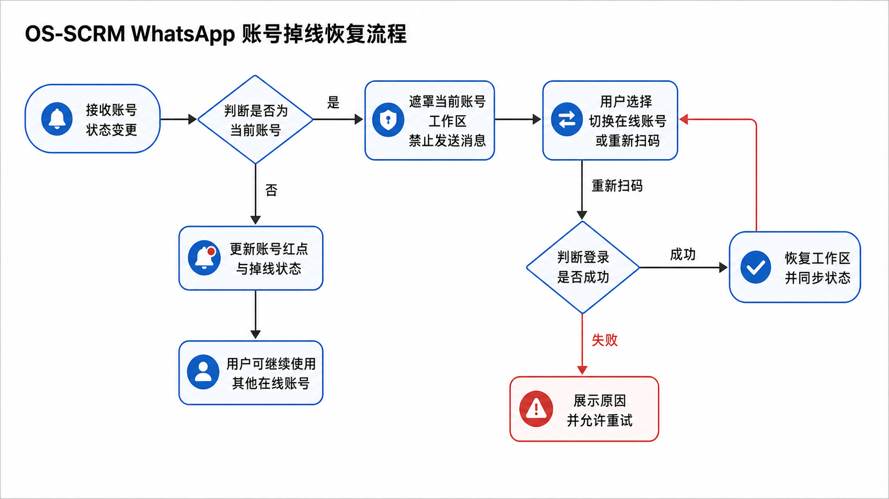
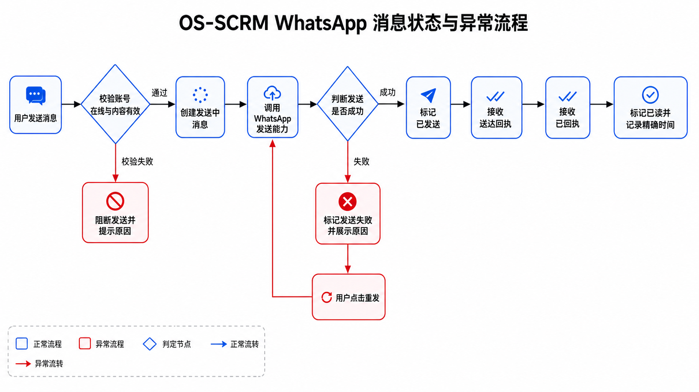

说明阅读说明
1. 该文档需与同期交付的原型demo结合阅读2. 本PRD不描述布局、控件位置、配色与动效,视觉与交互以UI输出>Demo效果为准3. PRD包含Demo无法表述的操作限制和后端逻辑,需对照查看
第一章需求背景
GB营销平台OS面向海外家居业务,WhatsApp是销售PM 和销售助理与海外客户沟通、项目协作的核心通道。现有SCRM 需要从单一账号、能力分散的沟通形态升级为统一Web IM 工作台,使员工在一个页面中使用多个WhatsApp 账号,并保留WhatsApp高频原生能力。
群聊在业务中对应客户项目协作群、项目交付群与代理商群,不是单聊的附属场景。消息已读时间、会话状态、群事件等数据还会作为后续AI分析和业务诊断的输入,因此必须稳定、可追溯。
1.2目标用户
| 角色 | 使用场景 | 本期能力 |
|---|
| 销售 PM | 售中沟通、报价跟进、项目群协作 | 使用完整 IM 基础能力 |
| 销售助理 | 售前沟通、客户信息确认、协作群沟通 | 使用完整 IM 基础能力 |
| 外部联系人/客户 | 通过 WhatsApp 单聊或群聊参与沟通 | 接收和发送 WhatsApp 消息 |
| 设计师、报价师等协作成员 | 在项目群中参与业务协作 | 作为群成员参与沟通 |
1.3上下游依赖
| 依赖 | 关系 |
|---|
| WhatsApp 第三方能力提供方 | 提供账号、联系人、会话、消息和群组底层能力 |
| SCRM 云账号管理 | 提供云账号统一管理、状态巡检与提醒；本 PRD 不重复描述云账号管理能力 |
| 营销 OS 底层架构 | 提供登录、权限、菜单、通用异常提示等平台基础能力 |
| 后续 AI 与数据模块 | 消费会话、消息状态、精确已读时间和群事件数据 |
第二章需求目标
1. 建设支持员工同时使用多个WhatsApp 账号的SCRM Web IM 工作台。
2.在SCRM 内完成新会话发起、联系人信息查看、会话查看、消息收发、消息操作和群聊管理等高频基本功能。
3. 保证账号、联系人、会话、消息和群组状态可多端实时同步、历史信息可追溯。
4. 为账号掉线、消息失败、媒体异常和群操作失败提供明确恢复路径。
第三章需求核心业务流程图
3.1IM 主流程
3.2账号掉线恢复流程

图 3.2：账号掉线恢复流程
3.3消息状态与异常流程

图 3.3：消息状态与异常流程
3.4群聊管理流程
第四章需求功能清单
4.1SCRM 客户端
4.1.1 会话工作台 · 账号
| 功能编号 | 功能名称 |
|---|
| 5.1 | 多账号登录与切换 |
| 5.2 | 跨账号消息提醒与账号退出 |
| 5.3 | 掉线恢复 |
4.1.2 会话工作台 · 联系人
| 功能编号 | 功能名称 |
|---|
| 5.4 | 发起新会话 |
| 5.5 | 联系人详情与备注 |
4.1.3 会话工作台 · 会话
| 功能编号 | 功能名称 |
|---|
| 5.6 | 会话列表与搜索筛选 |
| 5.7 | 自定义会话分类 |
| 5.8 | 会话状态操作 |
4.1.4 会话工作台 · 消息
| 功能编号 | 功能名称 |
|---|
| 5.9 | 多类型消息收发 |
| 5.10 | 消息状态与失败重发 |
| 5.11 | 消息编辑、置顶与撤回 |
| 5.12 | 引用、转发、添加表情与@ |
| 5.13 | 消息搜索、选择与星标 |
| 5.14 | 媒体预览与异常提示 |
4.1.5 会话工作台 · 群聊
| 功能编号 | 功能名称 |
|---|
| 5.15 | 群列表与群详情 |
| 5.16 | 群资料与成员管理 |
| 5.17 | 管理员、邀请与入群审批 |
4.1.6 会话工作台 · 历史与同步
4.2SCRM 后端服务
4.2.1 渠道接入服务
| 功能编号 | 功能名称 |
|---|
| 5.19 | WhatsApp 账号连接与状态同步 |
4.2.2 客户与线索服务
4.2.3 会话服务
| 功能编号 | 功能名称 |
|---|
| 5.21 | 会话列表与状态同步 |
| 5.22 | 消息发送与回执 |
| 5.23 | 消息操作能力 |
| 5.24 | 群组能力与群事件 |
| 5.25 | 历史消息与异常兜底 |
第五章需求功能详述
5.1-5.18SCRM 客户端
会话工作台 · 账号
5.1 SCRM 客户端——会话工作台-账号——多账号登录与切换
| 场景说明 | 销售PM 或销售助理需要在一个工作台登录并切换多个WhatsApp 账号,集中处理各账号会话。 |
| 前置条件 | 用户已登录SCRM ;账号绑定数上限未达到(10个) |
| 核心逻辑 | - 新增账号时调起弹窗WhatsApp二维码登录;二维码需包含过期时间,失效后可刷新。
- 登录成功后新增账号进入登录状态,并默认加载此账号,开始自动同步近期多端数据
- 切换账号后只加载当前账号下的联系人、会话、消息和群组,不同账号的数据不得混排。
|
| 功能交互 | - 操作路径:账号栏顶部 + →打开云端登录二维码→WhatsApp扫码完成绑定;点击账号头像切换当前工作区。
- 提供新增账号、刷新二维码和切换账号操作
|
| 边界与异常 | 二维码过期自动刷新;绑定失败展示原因;无需至少保留一个可用账号登录态 |
| 埋点 | SCRM_ACCOUNT_BIND_RESULT |
| 验收标准 | 绑定成功后账号可切换;切换后工作区数据归属正确; |
5.2 SCRM 客户端——会话工作台-账号——跨账号消息提醒与账号退出
| 场景说明 | 销售人员使用当前账号时,需要感知其他账号的新消息,并退出不再使用的账号。 |
| 核心逻辑 | - 非当前账号收到新消息时,不自动切换工作区,只累计对应账号未读数并提醒。
- 切换至该账号并打开会话后,按会话已读规则清除未读。
- 退出账号需二次确认;退出后从个人工作区移除,但不替代云账号管理中的解绑/删除能力。
|
| 功能交互 | - 操作路径:非当前账号收到消息→账号头像展示提醒+1(上限99);鼠标移入账号头像→展开账号信息→点击退出账号→二次确认。
- 当前账号退出成功后自动切换至排第一个的可用账号。
|
| 边界与异常 | 退出失败保持原状态 |
| 埋点 | SCRM_CROSS_ACCOUNT_NOTICE 、SCRM_ACCOUNT_LOGOUT_RESULT |
| 验收标准 | 非当前账号消息不打断当前操作;退出确认成功后账号不再出现在个人工作区。 |
5.3 SCRM 客户端——会话工作台-账号——掉线恢复
| 场景说明 | 销售人员遇到账号掉线时,需要明确知道影响范围并快速恢复账号。 |
| 核心逻辑 | - 当前账号掉线后,工作区进入不可发送状态并提示重新扫码。
- 其他在线账号仍可切换和使用。
- 重新扫码成功后恢复当前账号能力并重新同步会话状态。
- 云账号掉线规则复用云账号管理PRD,此处仅为本地登录账号说明
|
| 功能交互 | - 操作路径:当前账号掉线→工作区展示掉线状态→点击重新扫码登录;用户也可直接点击其他在线账号继续工作。
- 掉线账号禁止发送消息和执行依赖在线状态的操作;重连后视为登录开始同步消息
|
| 边界与异常 | 重登失败保留掉线态并允许重试;掉线期间的消息由“历史消息与异常兜底”能力补拉。 |
| 埋点 | SCRM_ACCOUNT_OFFLINE 、SCRM_ACCOUNT_RECONNECT_RESULT |
| 验收标准 | 掉线账号不可操作任何内容;在线账号不受影响;恢复登录后可继续操作。 |
会话工作台 · 联系人
5.4 SCRM 客户端——会话工作台-联系人——发起新会话
| 场景说明 | 销售人员需要通过添加联系人或新建群组发起新会话。 |
| 核心逻辑 | - 发起新会话提供“新建群组”和“添加联系人”两种能力
- 添加联系人是使用当前工作台WhatsApp 账号添加,不允许在弹窗中切换账号。
- 用户输入用户号码或WhatsApp 账号,系统接口验证账号有效性;验证通过后添加联系人并创建或打开对应会话。
- 同一WhatsApp 账号下已存在对应联系人会话时,直接打开已有会话,不重复创建。
- 新建群组时群名称必填,不做重复性校验,至少选择1名成员,当前WhatsApp 账号自动加入群组。
|
| 功能交互 | - 操作路径:会话列表顶部“新聊天”入口→选择“新建群组”或“添加联系人”。
- 新建群组:通过“新聊天→新建群组”或单聊中的“发起群聊”进入创建流程,填写群名称并选择成员→创建后进入新群会话;群名称最多50字符,群成员最多500人。
- 添加联系人:查看只读的当前WhatsApp 账号→输入用户号码或WhatsApp 账号→点击匹配结果添加并进入会话。
- 手机号必须符合E.164格式且最多15位;号码无效、已超限或未匹配到账号时禁止添加。
|
| 边界与异常 | 号码无效时禁止创建;验证超时提示重试;号码验证能力依赖第三方接口;群创建失败不生成群。 |
| 埋点 | SCRM_CONTACT_VERIFY_RESULT 、SCRM_CONVERSATION_CREATE 、SCRM_GROUP_CREATE_RESULT |
| 验收标准 | 两种发起路径均可用;有效联系人可进入会话;无效号码被明确拦截; |
5.5 SCRM 客户端——会话工作台-联系人——联系人详情与备注
| 场景说明 | 销售人员在沟通前需要查看联系人最新资料、活跃状态和备注,确认沟通对象。 |
| 核心逻辑 | - 打开单聊时获取联系人最新资料;联系人字段变化通过实时事件更新。
- 展示当前是否在线和上次活跃时间,精度至少到分钟。
- 单聊中展示联系人地区和当地时间,初次通过手机号或USBID获得
- 支持读写联系人私人备注,并与WhatsApp 端双向同步。
|
| 功能交互 | - 操作路径:打开单聊→点击聊天顶部头像或三点菜单“联系人信息”→查看联系人资料。
- 联系人备注编辑、上次活跃时间展示为 [x 分钟前, x 小时前, x 天前,超过 3 个月则很久以前 ]
- 备注最多50字符,保存成功后与WhatsApp双向同步
|
| 边界与异常 | 活跃状态不可用时展示未知;备注同步失败保留旧值并提示。 |
| 埋点 | SCRM_CONTACT_DETAIL_VIEW 、SCRM_CONTACT_REMARK_RESULT |
| 验收标准 | 资料变化可同步;备注写入成功后两端一致;同步失败不覆盖旧值。 |
会话工作台 · 会话
5.6 SCRM 客户端——会话工作台-会话——会话列表与搜索筛选
| 场景说明 | 销售人员需要快速找到当前账号下的目标单聊或群聊。 |
| 核心逻辑 | - 当前账号下单聊和群聊混排;置顶会话优先,其余按最后活跃时间倒序。
- 支持分页加载,搜索匹配联系人名、备注名、号码、群名和消息。
- 支持全部、未读、特别关注、单聊、群聊和自定义列表筛选。
- 归档会话从主列表移出,可在归档范围中找回。
- 需返回并展示每个会话的未读消息数和总未读会话数。
|
| 功能交互 | - 操作路径:在会话列表搜索框输入关键词,或点击标签组筛选;向下滚动加载更多;点击会话进入聊天。
- 搜索输入最多50字符
|
| 边界与异常 | 搜索无结果展示空态;加载失败保留已加载数据并允许重试。 |
| 埋点 | SCRM_CONVERSATION_SEARCH 、SCRM_CONVERSATION_FILTER 、SCRM_CONVERSATION_PAGE_LOAD |
| 验收标准 | 排序、搜索和筛选结果正确;切换账号后不展示其他账号会话。 |
5.7 SCRM 客户端——会话工作台-会话——自定义会话分类
| 场景说明 | 销售人员需要创建个人自定义会话分类,按自己的工作方式整理会话。 |
| 核心逻辑 | - 自定义分类按WhatsApp 账号独立维护,属于SCRM 自有能力。
- 创建分类时名称必填,可选择当前账号下的会话加入。
- 会话可加入多个自定义分类;调整列表不改变WhatsApp原生会话状态。
- 自定义列表数据需要多端同步
|
| 功能交互 | - 操作路径:标签组末尾 + →输入列表名称→添加当前账号下的用户或群组→创建;会话三点菜单“更改分组”可调整所属列表。
- 列表名称最多10字符且同账号不可重名;每账号最多10个自定义列表;每个列表最多包含200个会话。
|
| 边界与异常 | 空名称、重名或达到数量上限时禁止创建;删除和重命名和排序能力本期不纳入。 |
| 埋点 | SCRM_CUSTOM_LIST_CREATE 、SCRM_CUSTOM_LIST_ASSIGN |
| 验收标准 | 列表创建成功后可筛选;会话所属列表更新正确;跨账号不共享。 |
5.8 SCRM 客户端——会话工作台-会话——会话状态操作
| 场景说明 | 销售人员需要管理会话状态,区分待处理会话和重点会话。 |
| 核心逻辑 | - 打开会话后可标记已读;已读会话可主动标未读。
- 支持置顶/取消置顶、静音/开启通知、归档/取消归档。
- 状态操作成功后同步更新列表;第三方状态事件也需回写本地。
- 静音不影响消息接收,只影响通知。
|
| 功能交互 | - 操作路径:会话列表卡片或聊天顶部三点菜单→标记已读/未读、置顶/取消置顶、静音/开启通知、归档。
- 打开未读会话自动标记已读;静音/开启通知、取消归档操作及归档列表入口为鼠标移入会话三点操作下拉框
|
| 边界与异常 | 操作失败回滚客户端状态并提示;重复事件需幂等。 |
| 埋点 | SCRM_CONVERSATION_STATE_CHANGE |
| 验收标准 | 状态操作与列表表现一致;其他设备状态变化可同步。 |
会话工作台 · 消息
5.9 SCRM 客户端——会话工作台-消息——多类型消息收发
| 场景说明 | 销售人员需要在SCRM 中收发业务沟通所需的WhatsApp消息类型。 |
| 核心逻辑 | - 支持文本、图片、视频、语音、音频文件、文档、位置、联系人卡片、表情包、模板消息、组合消息。
- 发送前校验账号在线、内容有效和类型限制;通过后创建发送中消息。
- 接收消息时按类型结构化展示;群消息必须标识发送者。
- 系统消息以独立类型进入时间线,覆盖群事件和渠道安全提示。
- 模板消息和组合消息具体规则依赖第三方能力。
|
| 功能交互 | - 操作路径:聊天输入条输入文本并发送;附件入口发送文档、相册、音频或联系人卡片;语音入口录制并发送;表情入口插入表情。
- 文本最多4096字符;单个文件最大100MB;单次发送附件最多10个;单条语音最⻓15分钟;账号离线时禁止发送。
- 多附件选择,以及视频、位置、表情包、模板消息和组合消息的发送操作为对话栏+号
|
| 边界与异常 | 接收不支持的类型以未知消息兜底,保留原始信息供排查;空文本禁止发送;组合消息任一部分失败则整组失败 |
| 埋点 | SCRM_MESSAGE_SEND_RESULT ,参数包含消息类型、会话类型和失败原因 |
| 验收标准 | 11类消息均可正确收发或明确提示能力限制;群消息发送者正确。 |
5.10 SCRM 客户端——会话工作台-消息——消息状态与失败重发
| 场景说明 | 销售人员需要确认消息是否发送、送达和已读,并在发送失败时重发。 |
| 核心逻辑 | - 消息状态正向流转:发送中→已发送→已送达→已读
- 已读回执记录“读到哪条消息+精确读取时间”,精度至少到秒。
- 失败消息展示失败原因;点击重发复用原消息记录,不生成重复消息。
- 状态事件按消息唯一标识幂等处理。
|
| 功能交互 | - 操作路径:点击发出消息的状态图标查看送达/已读详情;发送失败时点击消息旁重发入口。
- 单聊展示对方送达或已读时间;群聊按成员展示已读、已送达和尚未已读人数;
|
| 边界与异常 | 延迟回执可后续更新;乱序回执不得使状态倒退。 |
| 埋点 | SCRM_MESSAGE_STATUS_CHANGE 、SCRM_MESSAGE_RETRY_RESULT |
| 验收标准 | 状态不倒退;精确已读时间可查询;重发成功后原消息转为成功状态。 |
5.11 SCRM 客户端——会话工作台-消息——消息编辑、置顶与撤回
| 场景说明 | 销售人员需要对满足操作条件的已发消息进行修正、置顶或撤回。 |
| 核心逻辑 | - 编辑仅对本人发送且WhatsApp允许编辑的消息开放;成功后原消息更新并标记已编辑。
- 支持单聊和群聊消息置顶;权限限制以第三方能力为准。
- 双方撤回受2分钟时限限制;成功后原消息替换为撤回提示。
- “仅我们删除”只删除SCRM 本地可⻅记录,不影响对方。
|
| 功能交互 | - 操作路径:鼠标移入目标消息→打开消息操作条或更多菜单→选择编辑、置顶、双方撤回或仅我们删除。
- 编辑仅对本人发送的文本消息开放,发送后15分钟内可编辑
- 双方撤回仅在发送后2分钟内可执行;消息置顶可在会话顶部查看,可取消置顶和定位置顶消息位置
|
| 边界与异常 | 超过撤回时限明确提示;操作失败保持原消息。 |
| 埋点 | SCRM_MESSAGE_ACTION_RESULT ,参数为edit/pin/recall/local_delete |
| 验收标准 | 编辑和撤回更新原消息;超时撤回被拦截;失败不污染原状态。 |
5.12 SCRM 客户端——会话工作台-消息——引用、转发、添加表情与@
| 场景说明 | 销售人员需要基于消息上下文精准回复、转发和回应消息。 |
| 核心逻辑 | - 引用回复保留原消息标识和摘要,发送后展示引用关系。
- 转发支持选择一个或多个目标会话,目标消息标记为已转发。
- 添加表情写入或覆盖当前用户对目标消息的回应。
- 群聊中支持@ 提及成员,被提及成员收到特殊通知。
|
| 功能交互 | - 操作路径:鼠标移入消息→点击引用、添加、群内@ 或更多菜单“转发”;转发弹窗中搜索并选择目标会话。
- 单次最多转发20条消息至5个目标会话;添加表情重复操作覆盖当前用户原回应;群内@ 将消息发送者插入输入框。
|
| 边界与异常 | 原消息被撤回时引用仍保留可识别摘要;部分目标转发失败需逐项反馈。 |
| 埋点 | SCRM_MESSAGE_CONTEXT_ACTION |
| 验收标准 | 引用关系可追溯;转发目标正确; |
5.13 SCRM 客户端——会话工作台-消息——消息搜索、选择与星标
| 场景说明 | 销售人员需要在当前会话中查找和整理重要消息。 |
| 核心逻辑 | - 搜索范围为当前会话历史消息;点击结果定位到目标消息。
- 选择消息模式支持批量选择消息设置星标和转发
- 星标属于结果多端同步。
|
| 功能交互 | - 操作路径:聊天顶部三点菜单→搜索聊天内容或选择消息;搜索结果可点击定位;多选后通过底部操作栏星标或转发。
- 搜索输入最多100字符;单次最多选择50条消息;已撤回,本地删除消息不参与搜索。
|
| 边界与异常 | 无结果展示空态;达到选择上限后禁止继续勾选。 |
| 埋点 | SCRM_MESSAGE_SEARCH 、SCRM_MESSAGE_BATCH_ACTION |
| 验收标准 | 搜索结果可定位;批量操作只影响已选消息。 |
5.14 SCRM 客户端——会话工作台-消息——媒体预览与异常提示
| 场景说明 | 销售人员需要预览或下载媒体消息,并在资源失效时获知原因。 |
| 核心逻辑 | - 图片、视频、语音、音频、文档和位置按类型提供预览、播放或下载能力。
- 历史媒体不可用时展示失效或加载失败提示。
- 100MB以上大文件未推送时展示不可同步提示。
|
| 功能交互 | - 操作路径:点击图片、视频、语音、文档或位置消息→打开对应预览、播放或下载能力。
- 单个文件最大100MB;超过限制的入站文件仅展示不可同步提示,不提供补拉操作。
|
| 边界与异常 | 下载失败不影响消息正文;媒体资源或URL失效时仅提示失败,不自动刷新。 |
| 埋点 | SCRM_MEDIA_OPEN_RESULT 、SCRM_MEDIA_LOAD_FAIL |
| 验收标准 | 支持类型可打开;失败状态明确且不阻塞会话。 |
会话工作台 · 群聊
5.15 SCRM 客户端——会话工作台-群聊——群列表与群详情
| 场景说明 | 销售人员需要在当前账号会话中查找群聊并查看群详情。 |
| 核心逻辑 | - 群聊与单聊在会话列表混排;群列表可分页和搜索。
- 群详情包含群名、头像、描述、创建时间、成员、角色、成员在线状态、地区和当地时间;创建时间只读。
|
| 功能交互 | - 操作路径:会话列表点击“群组”标签或搜索群名→打开群会话→点击聊天顶部头像、成员数量或三点菜单“群聊信息”查看群详情。
- 群名搜索输入最多100字符;群详情中的创建时间只读。
|
| 边界与异常 | 群详情加载失败时保留会话消息并允许重试;手动创建群统一由“发起新会话”功能承载。 |
| 埋点 | SCRM_GROUP_DETAIL_VIEW |
| 验收标准 | 群聊可筛选和搜索;群详情字段完整;创建时间不可编辑。 |
5.16 SCRM 客户端——会话工作台-群聊——群资料与成员管理
| 场景说明 | 具备权限的群成员需要维护群资料和群成员。 |
| 核心逻辑 | - 具备管理员权限的用户可修改群名、描述和头像;创建时间只读。
- 支持单个或批量添加、移除成员,并支持当前账号退出群(管理员退出群需要先移交管理员)。
- 添加或移除失败时必须返回具体原因,例如隐私设置或权限不足。
- 成员变化成功后写入群事件系统消息推送到会话内。
|
| 功能交互 | - 操作路径:群聊信息→编辑群头像、群名或群备注;点击“添加成员”搜索并添加;成员行三点菜单可移除成员;点击退出群聊离开当前群
- 群名称必填且最多50字符;群备注最多200字符;群头像仅支持J PG/PNG且最大2MB;每群最多500人;单次添加或移除最多10人
|
| 边界与异常 | 无权限时只读;退出群成功后会话状态按第三方结果更新。 |
| 埋点 | SCRM_GROUP_INFO_CHANGE_RESULT 、SCRM_GROUP_MEMBER_ACTION_RESULT |
| 验收标准 | 权限正确;成功操作同步群详情并生成群事件;失败保持原状态。 |
5.17 SCRM 客户端——会话工作台-群聊——管理员、邀请与入群审批
| 场景说明 | 群管理员需要管理成员角色、邀请链接和入群申请。 |
| 核心逻辑 | - 支持成员与管理员角色调整;管理员数量以WhatsApp接口实际能力为准。
- 群成员列表中管理员置顶;当前账号不得对自身执行设为管理员或移除操作。
- 邀请链接支持复制和重置;重置后旧链接立即失效
- 支持实时推送待审批申请,可操作通过或拒绝。
- 角色变化、审批结果等群事件进入会话消息时间线(拒绝入群除外)
|
| 功能交互 | - 操作路径:群聊信息→非管理员成员三点菜单“设为群组管理员”或移除;添加成员弹窗中复制或重置邀请链接;入群申请区域通过或拒绝申请。
|
| 边界与异常 | 不得对无权限目标执行操作;审批重复提交需幂等。 |
| 埋点 | SCRM_GROUP_ROLE_CHANGE_RESULT 、SCRM_GROUP_REQUEST_RESULT |
| 验收标准 | 角色与审批结果同步正确;失败保持原状态并提示原因。 |
会话工作台 · 历史与同步
5.18 SCRM 客户端——会话工作台-历史与同步——历史消息与实时同步
| 场景说明 | 销售人员需要查看完整历史消息,并实时获得新消息和状态变化。 |
| 核心逻辑 | - 每个单聊和群聊支持拉取最近1000条历史消息,包含群事件。
- 首次或进入会话时按分页策略拉取;客户端按消息唯一标识去重。
- 联系人、会话、消息、群状态通过实时事件更新。
- 实时事件中断后,恢复时按最后同步时间补拉增量数据。
|
| 功能交互 | - 操作路径:打开会话自动加载首屏历史;向上滚动按每页100条继续加载;实时事件自动更新当前工作台。
- 每个会话最多加载最近1000条历史消息;实时事件5秒内可⻅;重连后60秒内完成增量恢复。
|
| 边界与异常 | 历史拉取失败可重试;实时事件重复、乱序和丢失需幂等与补偿。 |
| 埋点 | SCRM_HISTORY_LOAD_RESULT 、SCRM_REALTIME_SYNC_GAP |
| 验收标准 | 历史可连续加载;实时事件不重复生成对象;断线恢复可补⻬。 |
5.19-5.25SCRM 后端服务
渠道接入服务
5.19 SCRM 后端服务——渠道接入服务——WhatsApp 账号连接与状态同步
| 场景说明 | SCRM 后端服务需要统一调用WhatsApp 账号能力并同步账号状态。 |
| 核心逻辑 | - 提供二维码获取、过期刷新、登录结果查询、断开连接和账号状态查询能力。
- 优先接收状态Webhook,轮询作为兜底;状态事件携带账号唯一标识和变更时间。
- 状态变化写入账号状态,并推送给SCRM 客户端和相关内部服务。
- 与云账号管理共用账号标识和状态口径。
|
| 边界与异常 | 事件重复需幂等;第三方不可用时返回统一错误并记录告警。 |
| 验收标准 | 登录与状态变化可闭环;账号状态在各消费方一致。 |
客户与线索服务
5.20 SCRM 后端服务——客户与线索服务——联系人同步与号码验证
| 场景说明 | SCRM 后端服务需要维护每个账号的WhatsApp联系人数据。 |
| 核心逻辑 | - 支持联系人分页全量、按上次同步时间增量和实时变更推送。
- 变更事件区分新增、更新、删除,并注明变化字段。
- 提供联系人详情、最后活跃状态、号码验证和联系人备注读写。
- 联系人数据按WhatsApp 账号隔离;相同号码在不同账号下可形成独立关系。
|
| 边界与异常 | 删除联系人不删除历史消息;增量断点丢失时触发全量校准。 |
| 验收标准 | 联系人变更可追溯;号码验证结果明确;跨账号数据隔离。 |
会话服务
5.21 SCRM 后端服务——会话服务——会话列表与状态同步
| 场景说明 | SCRM 后端服务需要为客户端提供稳定的会话查询和状态操作能力。 |
| 核心逻辑 | - 提供按账号分页的会话列表、会话详情、搜索和状态筛选。
- 支持已读、未读、置顶、静音、归档操作,并同步第三方状态变化。
- 会话排序按置顶优先、最后活跃时间倒序。
- 新消息更新最后消息、最后时间和未读数。
|
| 边界与异常 | 第三方状态写入失败时不得返回成功;重复状态事件幂等。 |
| 验收标准 | 查询和状态操作结果一致;新消息可驱动会话列表更新。 |
5.22 SCRM 后端服务——会话服务——消息发送与回执
| 场景说明 | SCRM 后端服务需要统一发送消息并维护完整回执链路。 |
| 核心逻辑 | - 对各类消息提供统一发送入口或类型适配。
- 发送请求先生成SCRM 消息唯一标识,并保存第三方消息标识映射。
- 接收已发送、已送达、已读和失败回执;已读回执需保存精确时间。
- 重发复用原业务消息标识,并记录重试次数。
- 校验文本、文件、附件数量和语音时⻓限制;组合消息任一部分失败时整组失败并整体重试。
|
| 边界与异常 | 回执乱序不使状态倒退;第三方超时按未知结果处理,避免直接重复发送。 |
| 验收标准 | 消息状态链完整;重试不生成重复业务消息;精确已读时间可消费。 |
5.23 SCRM 后端服务——会话服务——消息操作能力
| 场景说明 | SCRM 后端服务需要支撑客户端消息操作并保持双方状态一致。 |
| 核心逻辑 | - 提供编辑、置顶、撤回、引用、转发和表情回复能力适配。
- 每次操作校验消息归属、操作权限、消息状态和时限。
- 操作成功后更新原消息或关联关系,并通过实时事件推送。
- 校验编辑15分钟、双方撤回2分钟、单次选择50条、单次转发20条消息至5个目标会话的限制。
|
| 边界与异常 | 第三方不支持的操作返回明确能力错误;重复操作需幂等。 |
| 验收标准 | 操作权限与时限正确;成功结果实时同步;失败不修改原记录。 |
5.24 SCRM 后端服务——会话服务——群组能力与群事件
| 场景说明 | SCRM 后端服务需要提供完整群组能力并记录群事件。 |
| 核心逻辑 | - 提供群列表、群详情、创建群、修改群资料、成员增删、退出群和角色调整。
- 提供入群申请查询、通过和拒绝能力。
- 群事件覆盖群资料变更、成员加入/退出/移除、角色调整、群主转让和群解散;必须包含操作者、时间、动作和目标,并转换为系统消息进入时间线。
- 管理员数量和角色规则以第三方能力为准,不在SCRM 写死。
- 校验群资料、群成员总数和单次成员操作限制;创建时间只读,不接受修改。
|
| 边界与异常 | 群操作失败保持原状态;重复群事件按事件标识去重。 |
| 验收标准 | 群操作结果、群详情和系统消息一致;权限错误可识别。 |
5.25 SCRM 后端服务——会话服务——历史消息与异常兜底
| 场景说明 | SCRM 后端服务需要保证历史可追溯,并对异常数据提供补偿。 |
| 核心逻辑 | - 按每页100条分页拉取并存储每个会话最近1000条历史消息,包含群事件。
- 实时事件中断后,按最后同步游标补拉联系人、会话、消息和群状态。
- 媒体资源保存可访问状态;失效时返回明确错误。
- 超过100MB的入站文件记录不可同步异常;媒体资源失效仅返回失败,不自动刷新;不可补拉场景记录异常供监控和人工排查。
|
| 边界与异常 | 补拉数据按第三方消息标识和业务消息标识双重去重。 |
| 验收标准 | 历史连续、去重正确;同步中断后可恢复;不可恢复异常可查询。 |
第六章系统改造与依赖
- 所有WhatsApp业务数据必须带 WhatsApp_account_id ,按当前登录用户可使用账号范围隔离。
- 消息、会话、联系人、群组和群事件需保留SCRM 唯一标识与第三方唯一标识映射。
- 群资料和成员操作权限以第三方返回角色与能力为准。
| 类型 | 要求 |
|---|
| 性能 | 会话列表和搜索 P95 响应不超过 2 秒；实时事件 5 秒内可见；重连后 60 秒内完成增量恢复 |
| 幂等 | 消息回执、会话状态、群事件和补拉数据需按唯一标识幂等处理 |
| 数据隔离 | 不同 WhatsApp 账号下的联系人、会话、消息和群组不得混排或串读 |
版本版本记录
| 版本 | 日期 | 说明 |
|---|
| V1.1 | 2026-06-04 | 原 PDF 版本 |
| V1.2 | 2026-06-05 | HTML 终版整理；文件限制口径统一为 100MB |